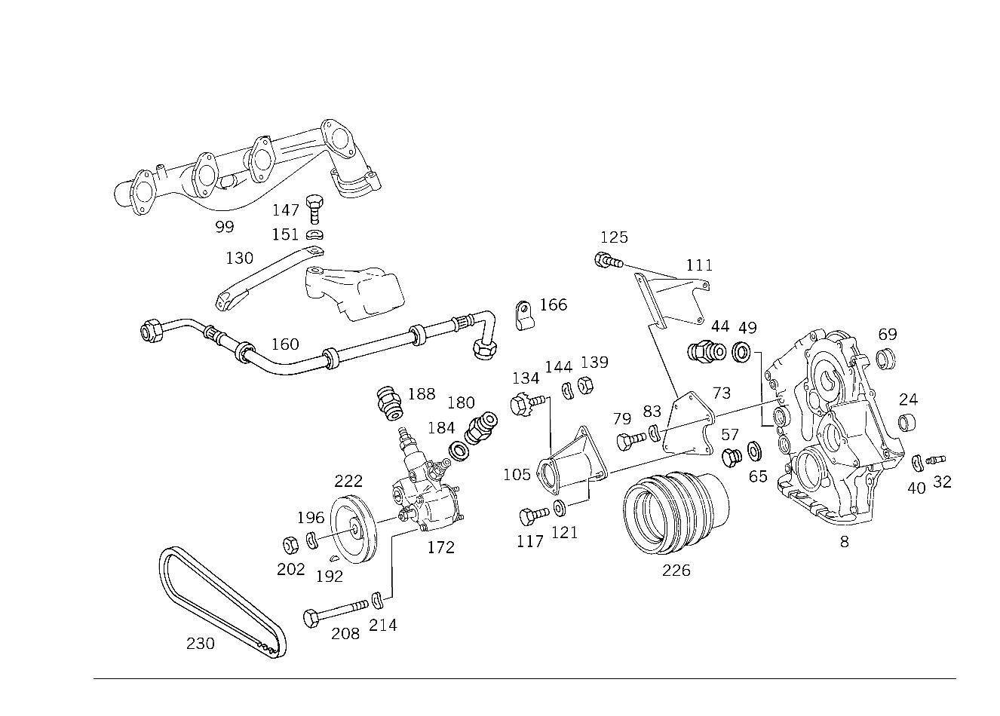

| № | Артикул | Название | Кол. | Примечание | Ограничение |
|---|---|---|---|---|---|
| 8 | A 116 015 19 01 | КРЫШКА | 1 | КАРТЕР ГРМ Z 12.364/03 | |
| 24 | A 116 157 03 50 | ВТУЛКА | 1 | ВАЛ ПРОМЕЖУТ.ШЕСТЕРНИ СПЕРЕДИ Z 12.364/01, Z 12.364/02, Z 12.364/03 | |
| 32 | A 116 181 02 74 | Шпилька с резьбой | 1 | НАТЯЖИТЕЛЬ ЦЕПИ Z 12.364/01, Z 12.364/02, Z 12.364/03 | |
| 40 | N 000137 008204 | Пружинная шайба | - | Z 12.364/01, Z 12.364/02, Z 12.364/03 | |
| 40 | N 000137 008212 | Пружинная шайба | 1 | НАТЯЖИТЕЛЬ ЦЕПИ Z 12.364/01, Z 12.364/02, Z 12.364/03 | |
| 57 | N 007604 026201 | Резьбовая пробка | 2 | КРЫШКА ГРМ Z 12.364/01, Z 12.364/02, Z 12.364/03 | |
| 65 | N 007603 026106 | Уплотнительное кольцо | 2 | КРЫШКА ГРМ Z 12.364/01, Z 12.364/02, Z 12.364/03 | |
| 69 | A 116 077 09 50 | ВТУЛКА | 1 | GUIDE GEAR BEARING Z 12.364/01, Z 12.364/02, Z 12.364/03 | |
| 73 | A 117 230 07 40 | ДЕРЖАТЕЛЬ | 1 | Z 12.364/01, Z 12.364/02, Z 12.364/03 [402] БОЛЬШЕ НЕ ПОСТАВЛЯЕТСЯ | |
| 79 | N 000961 014090 | Винт | 1 | КРОНШТЕЙН К КРЫШКЕ ГРМ Z 12.364/01, Z 12.364/02, Z 12.364/03 | |
| 79 | N 000933 008327 | Винт | - | Z 12.364/01, Z 12.364/02, Z 12.364/03 | |
| 79 | N 000933 008151 | Винт | 2 | КРОНШТЕЙН К КРЫШКЕ ГРМ Z 12.364/01, Z 12.364/02, Z 12.364/03 | |
| 83 | N 000137 014201 | Пружинная шайба | 1 | КРОНШТЕЙН К КРЫШКЕ ГРМ Z 12.364/01, Z 12.364/02, Z 12.364/03 | |
| 83 | N 000137 008204 | Пружинная шайба | - | Z 12.364/01, Z 12.364/02, Z 12.364/03 | |
| 83 | N 000137 008212 | Пружинная шайба | 2 | КРОНШТЕЙН К КРЫШКЕ ГРМ Z 12.364/01, Z 12.364/02, Z 12.364/03 | |
| 99 | A 116 142 33 01 | ВЫПУСКНОЙ КОЛЛЕКТОР | - | Рулевое управление: Влево Z 12.364/03 | |
| 99 | A 116 140 26 14 | ВЫПУСКНОЙ КОЛЛЕКТОР | 1 | СПРАВА Рулевое управление: Влево Z 12.364/03 | |
| 105 | A 117 230 06 40 | ДЕРЖАТЕЛЬ | 1 | Z 12.364/01, Z 12.364/02, Z 12.364/03 [402] БОЛЬШЕ НЕ ПОСТАВЛЯЕТСЯ | |
| 111 | A 117 230 09 40 | ДЕРЖАТЕЛЬ | 1 | Z 12.364/01, Z 12.364/02, Z 12.364/03 [402] БОЛЬШЕ НЕ ПОСТАВЛЯЕТСЯ | |
| 117 | N 000933 008154 | Винт | - | Z 12.364/01, Z 12.364/02, Z 12.364/03 | |
| 117 | N 304017 008021 | Винт с 6-гранной головкой | 2 | M8X20 Z 12.364/01, Z 12.364/02, Z 12.364/03 | |
| 121 | N 000125 008418 | Шайба | - | Z 12.364/01, Z 12.364/02, Z 12.364/03 | |
| 121 | N 000125 008443 | Шайба | 2 | 8 MM Z 12.364/01, Z 12.364/02, Z 12.364/03 | |
| 125 | N 000931 008244 | Винт | 2 | Z 12.364/01, Z 12.364/02, Z 12.364/03 | |
| 130 | A 117 230 10 40 | ДЕРЖАТЕЛЬ | 1 | Z 12.364/01, Z 12.364/02, Z 12.364/03 [402] БОЛЬШЕ НЕ ПОСТАВЛЯЕТСЯ | |
| 134 | A 100 460 01 72 | БОЛТ | - | Z 12.364/01, Z 12.364/02, Z 12.364/03 | |
| 134 | A 110 460 01 72 | БОЛТ | - | Z 12.364/01, Z 12.364/02, Z 12.364/03 | |
| 134 | A 117 460 01 72 | БОЛТ | 1 | Z 12.364/01, Z 12.364/02, Z 12.364/03 | |
| 139 | N 000934 008010 | Гайка | - | Z 12.364/01, Z 12.364/02, Z 12.364/03 | |
| 139 | N 304032 008006 | Шестигранная гайка | 1 | M8 Z 12.364/01, Z 12.364/02, Z 12.364/03 | |
| 144 | N 000137 008204 | Пружинная шайба | - | Z 12.364/01, Z 12.364/02, Z 12.364/03 | |
| 144 | N 000137 008212 | Пружинная шайба | 1 | Z 12.364/01, Z 12.364/02, Z 12.364/03 | |
| 147 | N 000933 012064 | Винт | 1 | ДЕРЖАТЕЛЬ НА КРОНШТ. ДВИГ. СПЕРЕДИ Z 12.364/01, Z 12.364/02, Z 12.364/03 | |
| 151 | N 000137 012203 | Пружинная шайба | - | Z 12.364/01, Z 12.364/02, Z 12.364/03 | |
| 151 | A 094 990 42 05 | Пружинная шайба | 1 | ДЕРЖАТЕЛЬ НА КРОНШТ. ДВИГ. СПЕРЕДИ Z 12.364/01, Z 12.364/02, Z 12.364/03 | |
| 160 | A 117 187 04 82 | ШЛАНГ | 1 | FROM DASHPOT TO OIL COOLER Z 12.364/01, Z 12.364/02, Z 12.364/03 [402] БОЛЬШЕ НЕ ПОСТАВЛЯЕТСЯ | |
| 160 | A 117 187 05 82 | ШЛАНГ | 1 | МАСЛ. РАДИАТОР К МАСЛ. ФИЛЬТРУ Z 12.364/01, Z 12.364/02, Z 12.364/03 [402] БОЛЬШЕ НЕ ПОСТАВЛЯЕТСЯ | |
| 166 | A 198 995 01 01 | хомут | 1 | ШЛАНГИ МАСЛА СМАЗКИ НА ДЕРЖАТЕЛЕ Z 12.364/01, Z 12.364/02, Z 12.364/03 | |
| 172 | A 000 230 01 64 | ГИДРОНАСОС | 1 | Z 12.364/01, Z 12.364/02, Z 12.364/03 | |
| 180 | N 915013 008002 | - Штуцер | 1 | Z 12.364/01, Z 12.364/02, Z 12.364/03 | |
| 184 | N 007603 014405 | - Уплотнительное кольцо | 1 | Z 12.364/01, Z 12.364/02, Z 12.364/03 | |
| 188 | N 003901 006002 | - Штуцер | 1 | Z 12.364/01, Z 12.364/02, Z 12.364/03 [402] БОЛЬШЕ НЕ ПОСТАВЛЯЕТСЯ | |
| 192 | N 006888 003000 | - Сегментная шпонка | 1 | Z 12.364/01, Z 12.364/02, Z 12.364/03 | |
| 196 | N 000137 012203 | - Пружинная шайба | - | Z 12.364/01, Z 12.364/02, Z 12.364/03 | |
| 196 | A 094 990 42 05 | - Пружинная шайба | 1 | Z 12.364/01, Z 12.364/02, Z 12.364/03 | |
| 202 | N 000934 012022 | - Гайка | 1 | Z 12.364/01, Z 12.364/02, Z 12.364/03 | |
| 208 | N 000931 006138 | - Винт | 3 | Z 12.364/01, Z 12.364/02, Z 12.364/03 | |
| 214 | N 000137 006204 | - Пружинная шайба | 3 | Z 12.364/01, Z 12.364/02, Z 12.364/03 | |
| 222 | A 117 236 01 10 | ШКИВ | 1 | ГИДРОНАСОС Z 12.364/01, Z 12.364/02, Z 12.364/03 [402] БОЛЬШЕ НЕ ПОСТАВЛЯЕТСЯ | |
| 226 | A 116 032 11 04 | ШКИВ | 1 | КОЛЕНВАЛ Z 12.364/03 [402] БОЛЬШЕ НЕ ПОСТАВЛЯЕТСЯ | |
| 230 | A 005 997 64 92 | РЕМЕНЬ КЛИНОВОЙ | - | Z 12.364/03 | |
| 230 | A 002 997 47 92 | РЕМЕНЬ КЛИНОВОЙ | - | Z 12.364/03 | |
| 230 | A 006 997 56 92 | РЕМЕНЬ КЛИНОВОЙ | 1 | ГИДРОНАСОС 9.5X813 Z 12.364/03 | |
| 230 | A 004 997 87 92 | Клиновой ремень | - | Z 12.364/03 | |
| 230 | A 006 997 32 92 | Клиновой ремень | 1 | ГЕНЕРАТОР 9.5X935 Z 12.364/03 | |
| A 001 989 47 20 | ГЕРМЕТИЗИРУЮЩИЙ СОСТАВ | - | Z 12.364/01, Z 12.364/02, Z 12.364/03 | ||
| A 001 989 25 20 | Герметизирующий состав | 1 | 100 G. Z 12.364/01, Z 12.364/02, Z 12.364/03 |
Позиций: 57 · подписано на схемах: 55 · колесо — плавный зум в курсор, перетаскивание — пан, двойной клик — зум, клик по артикулу — скопировать.